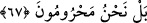

66. «Doğrusu borç altına girdik.»
Bu cümle, bir önceki âyette geçen tefekkehûn fiilinin fâilinden haldir. Yâni,
“ektiğimiz ekine yaptığımız masrafın borcu altına girdik” diye söylenir dururdunuz.
Mağrib adlı eserde belirtildiğine gore, ayette geçen (ğarâme) kelimesi bir insanın
elinde, zimmetinde ve üzerinde olmayan bir borcu üstlenmesi demektir. Veya, “bizler
rızkımızın mahvolmasıyla helâk olduk” yahut “işlediğimiz günahlarımızın uğursuzluğu
ile mahv olduk” diye söylenir dururdunuz.
67. «Daha doğrusu, biz yoksul kaldık» (derdiniz).
“Rızkımızdan mahrum kaldık” yahut “bizim nasibimiz yok, bizim nasibimiz, talih ve
bahtımız olsaydı ekinlerimiz böylesine bozulmazdı” diye geveler dururdunuz.
Enes b. Malik (r.a.)’dan rivayete göre, Peygamberimiz (s.a.) ensâr-ı kirâmın
topraklarına uğradı da: “Sizi ekin ekmekten alıkoyan nedir?” diye sordu. Ensar, “kıtlık
ve kuraklık” dediler. Efendimiz (s.a.): “Siz ekmeli değil misiniz? Çünkü Allah Teâlâ,
«Ekip bitiren benim. Dilersem su ile, dilersem rüzgar ile, dilersem herhangi bir
tohumu bitiririm” buyurmuştur. Sonra Rasûlullah (s.a.), “Şimdi bana, ektiğinizi haber
verin” (el-Vâkıa 56/63) âyet-i kerîmesini okudu.[220]
Bu hadis-i şerifte sebepli sebepsiz verenin yalnız Allah Teâlâ olduğuna bir işâret
vardır. Çünkü tevhîd, her şeyde gerçek sebep ve tesirin yalnız Allah’tan olduğuna
inanmaktır. Yıldız ve benzeri başka bir şeyden değildir. Rızkın kesilmesine sebep olan
günahı işlemiş olan nefis suçlanır. Hadis-i şerifte şöyle buyrulmuştur: “Bir sene
diğerinden daha yağışlı değildir. Bir topluluk günah işlediğinde Allah Teâlâ onların
yağmurunu bir başka topluluğa çeviriverir. Bütün toplum isyan edince de Allah
onların o yılki yağmurunu çöllere ve denizlere çevirir.”[221]
Yine bir hadis-i şerifte: “Temizliğe devam et ki rızkın bol olsun”[222] buyrulmuştur.
Rızık bolluğu temizlikle olunca, darlığı da temizliğin zıddı olan maddî ve mânevî
kirlilikle olur. Rızık, görünen ve görünmeyen olmak üzere iki çeşittir. Temizlik ve pislik
de öyledir. Bu sebeple rızık isteyen kimsenin mutlak ve devamlı olarak temizlik
üzerinde bulunması gerekir. Denilirse ki, “bizim temiz selefimiz, geçmiş dedelerimiz
devamlı temiz oldukları halde fakir idiler, bunun sebebi nedir?” Cevap olarak derim ki:
Selefimiz sonrakilerden daha çok mânevî rızık ve zenginlik içinde idiler. Rızıktan
gerçek maksad da budur. Onlar, Allah’a gerçek mânâda muhtaç olduklarının tam idraki
içinde olduklarından görünürde yoksul olsalar da zengin idiler. Nitekim Peygamberimiz
(s.a.) şöyle buyurmuştur: “Allahım beni kendine muhtaç etmekle zenginleştir.”
Bu sebeple onlar, zâhir ve bâtından her birini diğerine uygulamak ve olduğu gibi
görünmek için şekil zenginliğinden men’ edildiler. Böyle olunca onlar görünürde yoksul